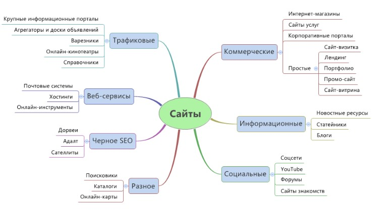

В классическом виде любой сайт технически состоит из нескольких элементов:
В мире существует огромное множество сайтов. Какой выбрать? Оформление и наполнение каждой веб-площадки подбирается индивидуально и зависит от выбранной тематики и назначения. На схеме представлена классификация сайтов.
Сайты могут различаться между собой по многим параметрам. В сети Интернет можно найти громное количество примеров сайтов для вдохновения веб-дизайнера. Web-программист, создающий сайт, должен обладать знаниями об основных языках программирования и разметки сайта.
| Наименование языков программирования и разметки | Характеристика | |
|---|---|---|
| HTML | язык гипертекстовой разметки с помощью которого создается структура страницы | |
| CSS | язык декодирования и описания внешнего вида веб-страницы | |
| JavaScript | язык программирования, позволяет делать сайт интерактивным | |
| PHP | скриптовый язык программирования | |
| .. | .. | .. |